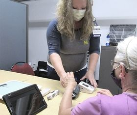
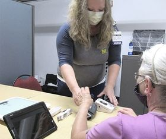

Welcome to CapacityBay Health
About us
A collective action plan to improve health in accordance
with the humanitarian principles in the delivery of health care in rural Nigerian
communities
CapacityBay Health Initiative (CBHI) is a not-for-profit healthcare and humanitarian
relief agency which focuses on and specializes in medical and emergency relief
services in rural communities. CBHI was founded in late 2017 in Nigeria as a
healthcare and humanitarian division of CapacityBay Inc based in the United States.
As a healthcare and humanitarian relief agency, CBHI
offers primary and community health care support to vulnerable and underprivileged
individuals and families in rural communities in Nigeria, using a variety of means
and approaches.
CBHI was birthed from the realization that most
vulnerable and underprivileged individuals, families and communities throughout
Nigeria (a nation of about 200 million people) lack access to basic health care due
to several factors which include but not limited to financial constraints and poor
healthcare system resources.
Our Vision
The vision of CBHI is to provide intervention strategies, and support to the
administration of preventive health care services in Nigeria’s underprivileged
and rural communities, allowing vulnerable and poor individuals and families to
achieve access to healthcare services. To attain this, CBHI is taking leadership
and resource mobilization role in addressing the social and economic
determinants to health care as they impact individuals, families and
communities.
Join us
 
